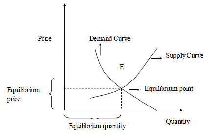

MATHS :: Lecture 22 :: Supply & demand

DEMAND FUNCTION AND SUPPLY FUNCTIONS
Demand Function
In the economics the relationship between price per unit and quantity demanded is known as demand function. Generally when the price per unit increases, quantity demanded decreases. Therefore if we take quantity demanded along x axis and the price per unit along the y axis then the graph will be a curve sloping downwards from left to right as shown in figure.
The demand function is generally denoted as q = f (p).
The following observations can be made form the graph.
- The slope of the demand curve is negative.
- Only the first quadrant part of the demand function is shown , since the price p and the quantity demanded q are positive.
Supply Function
In economics the relationship between price per unit and the quantity supplied by the manufacturer is called supply function. Generally when the price per unit increases, the quantity supplied also increases. Therefore if we take the quantity supplied along the x axis and price per unit along the y axis then the graph will be a curve sloping upwards from left to right as shown in following figure -
.
-
Supply Function
In economics the relationship between price per unit and the quantity supplied by the manufacturer is called supply function. Generally when the price per unit increases, the quantity supplied also increases. Therefore if we take the quantity supplied along the x axis and price per unit along the y axis then the graph will be a curve sloping upwards from left to right as shown in following figure.Following observations can be made form supply curve.
- The slope of the supply curve is positive.
- Only the first quadrant part of the supply function is shown, since the price p and the quantity supplied are non negative.
Equilibrium price
The price at which quantity demanded is equal to the quantity supplied is called equilibrium price.
Equilibrium quantity
The quantity obtained by substituting the equilibrium price in any one of the given demand and supply function is called equilibrium quantity. In the figure the point E is the equilibrium point in which, the x coordinate of the point E is Equilibrium quantity and the y coordinate of the point E is Equilibrium price.
-
Example 1: As a simple example let us assume that both the demand and supply functions are linear. Let us assume that the demand function is given by
q = a + bp
Since the demand function slopes downwards, b is negative. Also let us assume that the supply function is given by
q = c + dp
where d is positive. The graphs of these functions are shown in the following figure -
At the equilibrium point both the demand and supply are equal.
\ a + bp = c + dp
i.e. p(d-b) = a-c
P=\
This is the equilibrium price.
Example 2: Let the demand function be q = 10 -0.4 p and supply function be q = -5 +0.6 p then the equilibrium price is given by
10 -0.4 p= -5 +0.6 p
i.e p = 15
which is the equilibrium price and the equilibrium quantity is obtained by substitution this value of p either in the demand or in the supply function
\equilibrium quantity = 10 -0.4 x 15
= 4
Examples 3: The supply and demand curves for a commodity are known to be qs = p-1 and qd = (qs = quantity supplied; qd = quantity demanded).Find the equilibrium price.
Solution
Equilibrium price is qs = qd
 p-1 =
p-1 =
or, p2-p-12 = 0
or, (p+3)(p-4) = 0
p = 4 or -3
Hence, equilibrium price is 4 units.
| Download this lecture as PDF here |